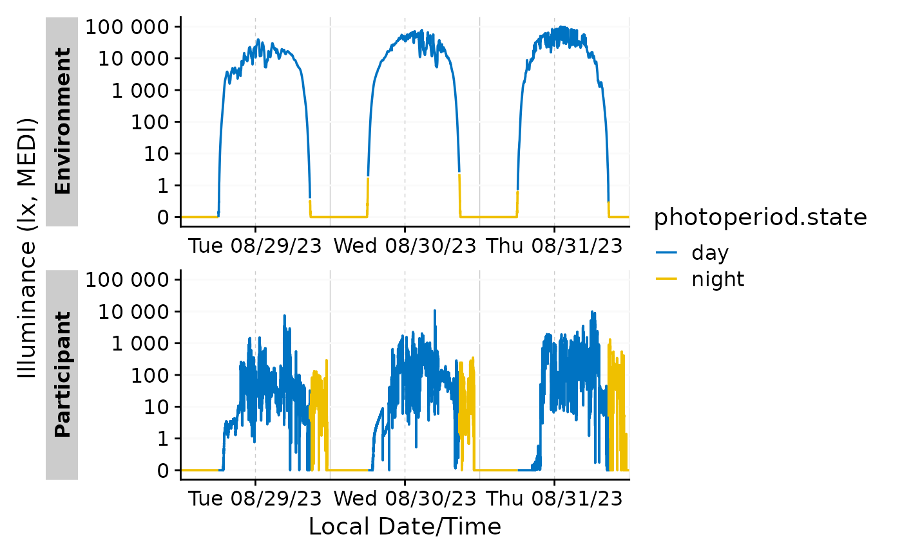
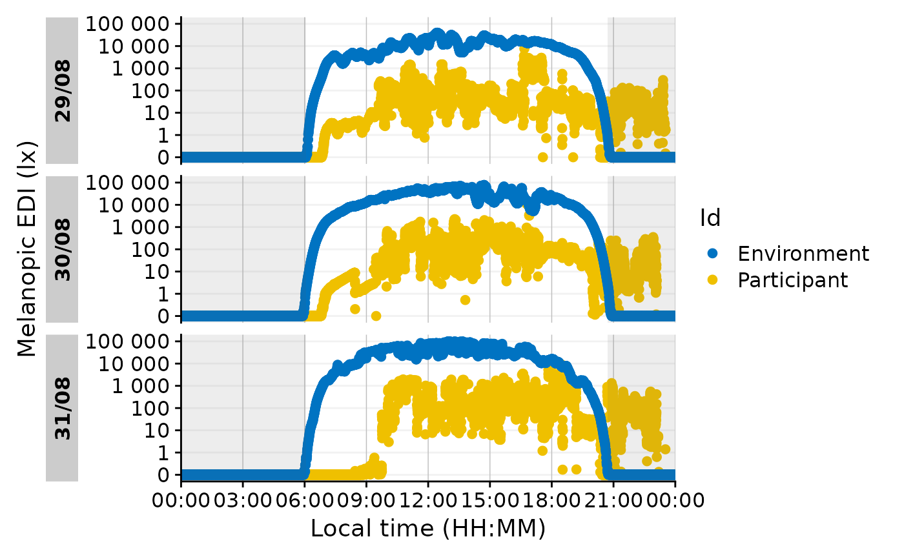

A family of functions to extract and add photoperiod information.
photoperiod() creates a tibble with the calculated times of dawn and dusk
for the given location and date. The function is a convenience wrapper for
suntools::crepuscule() to calculate the times of dawn and dusk. By default,
civil dawn and dusk are calculated, but the function can be used to calculate
other times by changing the solarDep parameter (e.g., 0 for sunrise/sunset,
12 for nautical, and 18 for astronomical).
Taking a light exposure dataset as input, extract_photoperiod() calculates
the photoperiods and their boundary times for each unique day in the dataset,
given a location and boundary condition (i.e., the solar depression angle).
Basically, this is a convenience wrapper for photoperiod() that takes a
light logger dataset and extracts unique dates and the time zone from the
dataset.
add_photoperiod() adds photoperiod information to a light logger dataset.
Beyond the photoperiod information, it will categorize the
photoperiod.state as "day" or "night". If overwrite is set to TRUE,
the function will overwrite any columns with the same name.
solar_noon() calculates the solar noon for a given location and date. The
function is a convenience wrapper for suntools::solarnoon(). The function
has no companions like extract_photoperiod() or add_photoperiod(), but
will be extended, if there is sufficient interest.
Usage
photoperiod(coordinates, dates, tz, solarDep = 6)
extract_photoperiod(
dataset,
coordinates,
Datetime.colname = Datetime,
solarDep = 6
)
add_photoperiod(
dataset,
coordinates,
Datetime.colname = Datetime,
solarDep = 6,
overwrite = FALSE
)
solar_noon(coordinates, dates, tz)Arguments
- coordinates
A two element numeric vector representing the latitude and longitude of the location. Important note: Latitude is the first element and Longitude is the second element.
- dates
A date of format
Date, or coercible toDatethroughlubridate::as_date()- tz
Timezone of the data. Expects a
character. You can look up the supported timezones withOlsonNames().- solarDep
A numerical value representing the solar depression angle between 90 and -90. This means a value of 6 equals -6 degrees above the horizon. Default is 6, equalling
Civil dawn/dusk. Other common values are 12 degrees forNautical dawn/dusk, 18 degrees forAstronomical dawn/dusk, and 0 degrees forSunrise/Sunset. Note that the output columns will always be nameddawnanddusk, regardless of thesolarDepvalue.- dataset
A light logger dataset. Expects a
dataframe. If not imported by LightLogR, take care to choose a sensible variable for theDatetime.colname.- Datetime.colname
column name that contains the datetime. Defaults to
"Datetime"which is automatically correct for data imported with LightLogR. Expects asymbol. Needs to be part of thedataset. Must be of typePOSIXct.- overwrite
Logical scalar. If
TRUE, the function will overwrite any columns with the same name. IfFALSE(default), the function will stop if any of the columns already exist in the dataset.
Value
photoperiod() returns a tibble with the calculated times of dawn
and dusk for the given location and date, with the length equal to the
dates input parameter . The tibble contains the following columns:
datewith the date of the calculation, stored as classDatetzwith the timezone of the output, stored as classcharacterlatandlonwith the latitude and longitude of the location, stored as classnumericsolar.anglewith the negative solar depression angle, i.e. the sun elevation above the horizon. stored as classnumericdawnandduskwith the calculated datetimes, stored as classPOSIXctphotoperiodwith the calculated photoperiod, stored as classdifftime.
extract_photoperiod() returns a tibble of the same structure as
photoperiod(), but with a length equal to the number of unique dates in
the dataset.
add_photoperiod returns the input dataset with the added
photoperiod information. The information is appended with the following
columns: dawn, dusk, photoperiod, and photoperiod.state.
solar_noon() returns a tibble with the calculated solar noon
Details
Please note that all functions of the photoperiod family work with one
coordinate pair at a time. If you have multiple locations (and multiple time
zones), you need to run the function for each location separately. We suggest
using a nested dataframe structure, and employ the purrr package to iterate
over the locations.
See also
Other photoperiod:
gg_photoperiod()
Examples
#example für Tübingen, Germany
coordinates <- c(48.521637, 9.057645)
dates <- c("2023-06-01", "2025-08-23")
tz <- "Europe/Berlin"
#civil dawn/dusk
photoperiod(coordinates, dates, tz)
#> date tz lat lon solar.angle dawn
#> 1 2023-06-01 Europe/Berlin 48.52164 9.057645 -6 2023-06-01 04:46:05
#> 2 2025-08-23 Europe/Berlin 48.52164 9.057645 -6 2025-08-23 05:55:03
#> dusk photoperiod
#> 1 2023-06-01 21:57:43 17.19384 hours
#> 2 2025-08-23 20:56:37 15.02618 hours
#sunrise/sunset
photoperiod(coordinates, dates, tz, solarDep = 0)
#> date tz lat lon solar.angle dawn
#> 1 2023-06-01 Europe/Berlin 48.52164 9.057645 0 2023-06-01 05:32:42
#> 2 2025-08-23 Europe/Berlin 48.52164 9.057645 0 2025-08-23 06:33:53
#> dusk photoperiod
#> 1 2023-06-01 21:10:59 15.63821 hours
#> 2 2025-08-23 20:17:52 13.73304 hours
#extract_photoperiod
sample.data.environment |>
extract_photoperiod(coordinates)
#> date tz lat lon solar.angle dawn
#> 1 2023-08-29 Europe/Berlin 48.52164 9.057645 -6 2023-08-29 06:03:20
#> 2 2023-08-30 Europe/Berlin 48.52164 9.057645 -6 2023-08-30 06:04:50
#> 3 2023-08-31 Europe/Berlin 48.52164 9.057645 -6 2023-08-31 06:06:20
#> 4 2023-09-01 Europe/Berlin 48.52164 9.057645 -6 2023-09-01 06:07:50
#> 5 2023-09-02 Europe/Berlin 48.52164 9.057645 -6 2023-09-02 06:09:19
#> 6 2023-09-03 Europe/Berlin 48.52164 9.057645 -6 2023-09-03 06:10:48
#> dusk photoperiod
#> 1 2023-08-29 20:45:14 14.69838 hours
#> 2 2023-08-30 20:43:08 14.63828 hours
#> 3 2023-08-31 20:41:01 14.57813 hours
#> 4 2023-09-01 20:38:54 14.51793 hours
#> 5 2023-09-02 20:36:47 14.45769 hours
#> 6 2023-09-03 20:34:39 14.39742 hours
#add_photoperiod
added_photoperiod <-
sample.data.environment |>
add_photoperiod(coordinates)
added_photoperiod |> head()
#> # A tibble: 6 × 7
#> # Groups: Id [1]
#> Id Datetime MEDI dawn dusk
#> <fct> <dttm> <dbl> <dttm> <dttm>
#> 1 Participant 2023-08-29 00:00:04 0 2023-08-29 06:03:20 2023-08-29 20:45:14
#> 2 Participant 2023-08-29 00:00:14 0 2023-08-29 06:03:20 2023-08-29 20:45:14
#> 3 Participant 2023-08-29 00:00:24 0 2023-08-29 06:03:20 2023-08-29 20:45:14
#> 4 Participant 2023-08-29 00:00:34 0 2023-08-29 06:03:20 2023-08-29 20:45:14
#> 5 Participant 2023-08-29 00:00:44 0 2023-08-29 06:03:20 2023-08-29 20:45:14
#> 6 Participant 2023-08-29 00:00:54 0 2023-08-29 06:03:20 2023-08-29 20:45:14
#> # ℹ 2 more variables: photoperiod <drtn>, photoperiod.state <chr>
added_photoperiod |>
filter_Date(length = "3 days") |>
gg_days(aes_col = photoperiod.state,
group = dplyr::consecutive_id(photoperiod.state),
jco_color = TRUE
)

added_photoperiod |>
filter_Date(length = "3 days") |>
gg_day(aes_col = Id) +
ggplot2:: geom_rect(
data = \(x) x |> dplyr::ungroup(Id) |> dplyr::summarize(dawn = mean(dawn) |> hms::as_hms()),
ggplot2::aes(xmin = 0, xmax = dawn, ymin = -Inf, ymax = Inf),
alpha = 0.1
) +
ggplot2:: geom_rect(
data = \(x) x |> dplyr::ungroup(Id) |> dplyr::summarize(dusk = mean(dusk) |> hms::as_hms()),
ggplot2::aes(xmin = dusk, xmax = 24*60*60, ymin = -Inf, ymax = Inf),
alpha = 0.1
)

added_photoperiod |> dplyr::summarize(dawn = mean(dawn) |> hms::as_hms())
#> # A tibble: 2 × 2
#> Id dawn
#> <fct> <time>
#> 1 Environment 18:07:04.984169
#> 2 Participant 18:07:04.984169
#solar_noon()
solar_noon(coordinates, dates, tz)
#> date tz lat lon solar.noon
#> 1 2023-06-01 Europe/Berlin 48.52164 9.057645 2023-06-01 13:21:35
#> 2 2025-08-23 Europe/Berlin 48.52164 9.057645 2025-08-23 13:26:21